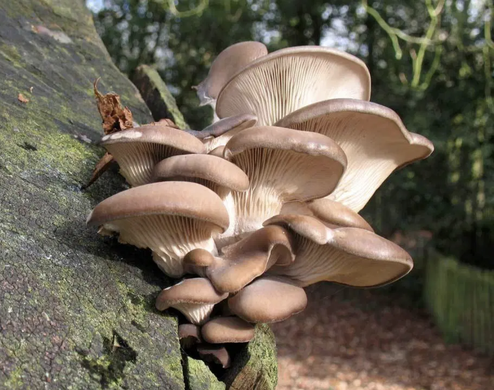
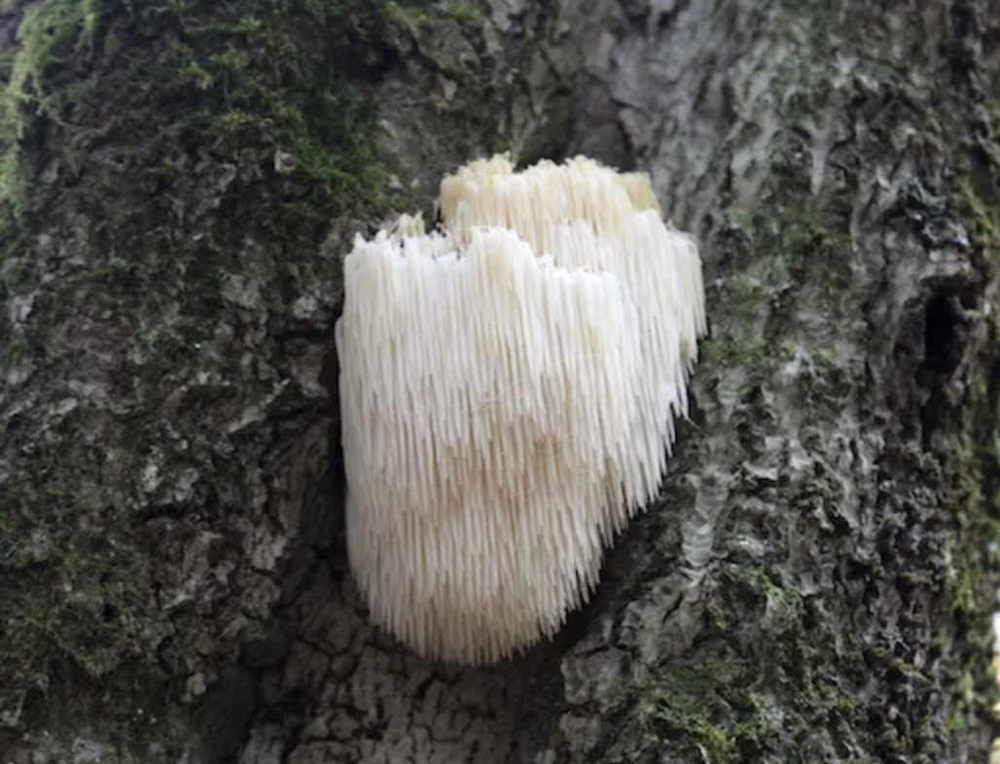

This is a quick guide to help you identify edible mushrooms!
Posionous Mushrooms
How to tell if a mushroom is NOT safe to eat:
NOT SAFE:
Mushrooms with a red cap or stem
Mushrooms with a bad odor
mushrooms with white gills, a skirt or ring on the stem, and a bulbous or sack-like base (called a volva).
Oyster Mushroom (edible)

Oyster mushrooms typically grow on dead or dying trees. They are occansionally found on fallen branches and dead stumps. These grow all over North America and have white to brownish-gray caps that are typically 2–8 inches wide.
Lion's Mane (edible)

These icicle-looking mushrooms have a mild seafood flavor. They are usually white, but can have hints pink. You can typically find them growing on trees.